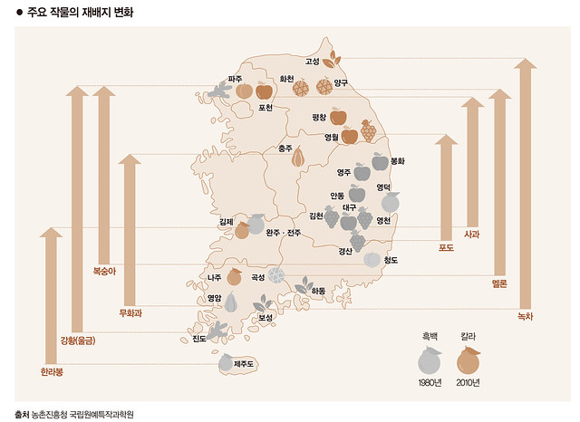
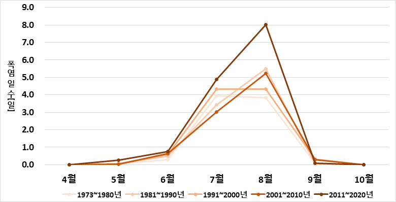
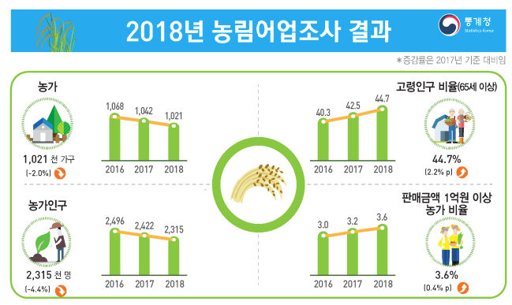

먹을 식량이 부족하여 다수의 굶어 죽는 사람이 대한민국에 생긴다면 믿기시겠습니까? 애그플레이션, 농업을 뜻하는 agriculture와 물가상승을 의미하는 inflation의 합성어이자, 농산물의 가격이 오르면서 일반 물가가 상승하는 현상을 뜻하는 신조어입니다. 현재 애그플레이션은 언론 등에서 나날이 언급되는 수가 늘어가고 있습니다. 애그플레이션의 원인이 무엇이고, 우리가 관심을 가져야 하는 까닭은 무엇인지 알아보도록 하겠습니다. 이 글은 애그플레이션의 심각성을 알리는 것에 중점을 두었습니다. 그러므로 적혀진 해결 방안을 보기만 하는 것보다는, 자신이 직접 곰곰이 생각해 해결 방안을 고려해보았으면 하는 바람입니다.
애그플레이션의 대표적인 원인은 지구온난화와 이상 기후 현상, 도시화로 인한 농가 감소입니다. 이로 인해 농작물 재배량이 감소하여 애그플레이션이 나타납니다.
그럼 첫 번째로 지구온난화가 애그플레이션에 끼치는 영향을 알아보도록 하겠습니다. 지구온난화란 지표 부근의 기온이 장기적으로 상승하는 기상 현상을 말합니다. 그럼 이 지구온난화는 애그플레이션에 어떤 식으로 영향을 끼칠까요?
위 그림은 지구온난화로 인해 작물의 재배지가 변화한 사례들을 보여주고 있습니다. 위 자료를 보면 기온상승으로 주요 농작물의 주산지가 남부지방에서 충북, 강원 지역 등으로 북상되고 있음을 알 수 있습니다. 그렇다면 우리는 한 가지 사실을 유추해볼 수 있습니다. 시간이 지나 지구온난화가 지속적으로 심화될 경우에는 작물의 재배 가능한 기온이 맞지 않아서 우리가 재배하는 주요 작물의 재배지가 우리 국토를 벗어날 수도 있다는 사실을 말이죠. 그렇게 되면 우리나라는 큰 경제적 위기 상황에 놓이게 될 것입니다. 굳이 말하자면, 이 문제에는 나쁜 점만 있는 것은 아닙니다. 기존에 온도가 낮아 농사를 짓지 못하던 지역이 따뜻해지면서 농사를 짓게 되어 농업 생산량이 증가할 수도 있고 온도가 맞지 않아 국내 재배가 불가능했던 열대작물을 재배할 수도 있습니다. 하지만 새로운 작물을 국내 재배 환경에 맞게 적용하기 위해서는 막대한 비용이 들기 때문에 소농민들은 정부의 도움 없이 재배 작물을 바꾸는 것이 현실적으로 쉬운 일이 아닙니다. 그런 일이 생긴다면 정부의 지원이 필수적일 것입니다.
다음으로는, 이상 기후가 농업에 끼치는 영향을 알아보도록 하겠습니다. 이상 기후란 지구의 기후가 인위적인 요인(화석연료 과다사용, 인간 활동에 의한 온실가스 증가 등)과 자연적인 요인(화산폭발, 태양에너지 변화 등)에 의해 변화하는 것을 말합니다. 이상기후로 인한 기상재난의 발생 빈도와 강도는 지속적으로 증가하고 있고, 농업은 기상 조건에 매우 민감한 산업이기 때문에 이상 기후(기상재난)의 발생 빈도와 강도의 증가는 농업 부문에 직․간접적인 영향을 미칠 수밖에 없습니다.
위 그림에서 보면 우리나라의 폭염일수는 2001~2010년 10년간 평균 9.2일에서 2011~2020년 10년간 평균 14.0일로 과거에 비해 폭염 발생 빈도가 상승하는 경향을 확인할 수 있습니다. 2018년 이상 기후보고서(발간등록번호 11-1360000-000705-01)에 따르면 이례적인 2018년 7~8월 폭염과 가뭄으로 인한 강한 일사와 고온의 영향으로 과수 햇볕데임, 가축폐사 등 농작물 22,509ha와 가축 9,079천마리(폐사) 피해가 발생했다고 합니다. 이러한 이상 기후로 농산물 품질은 하락하고 농산물의 가격이 상승하면서 경제 전체에 영향을 주어 인플레이션을 초래하게 되는 것입니다. 지속적인 폭염과 가뭄 등과 같은 이상기후로 농산물의 가격이 증가하고, 거의 모든 생산물의 가격에 영향을 끼친다는 사실이 농업이 얼마나 중요한지를 설명하고 있는 것 같습니다.
다음으로 도시화로 인한 농업인구 감소가 애그플레이션에 끼치는 영향을 알아보도록 하겠습니다. 먼저, 도시화란 도시의 수가 증가하고, 국가 전체 인구 중 도시에 사는 인구수가 증가하는 것을 의미합니다.
통계청이 발표한 ‘2018년 농림어업조사 결과’에 따르면 우리나라 농업인구는 지속적으로 감소하여 2018년 농업인구는 2010년 대비 65만이 줄었고, 2018년 65세 이상 고령비율은 44.7%로 집계되었습니다. 이러한 도시화 현상으로 인해 도시의 농산물 수요층은 증가하고, 농촌의 농산물 생산층은 점점 감소했습니다. 그렇게 되면 수요와 공급의 법칙에 의해 농산물의 가격은 증가할 수밖에 없고 가격이 증가하면 수요량이 감소하는 것이 수요의 법칙입니다. 반대로, 수요량이 증가하면 가격이 증가하는 것도 수요의 법칙입니다. 그러한 이유로 농산물의 가격은 끝없이 올라가고, 다른 생산물들의 가격은 증가한 농산물의 가격으로 인해 올라가고 최저시급, 임금 등 또한 농산물의 가격과 함께 올라가게 되는 것입니다. 결론적으로 이것이 바로 애그플레이션입니다.
그럼 마지막으로 지구온난화나 이상 기후 등 지속적인 자연의 변화에 따른 애그플레이션이 아닌 우발적인 상황, 예를 들면 러시아와 우크라이나의 전쟁이 애그플레이션에 끼치는 영향을 알아보도록 하겠습니다. 우크라이나는 2020년 기준 세계 밀 수출국 5위입니다. 그런데 현재 우크라이나는 러시아와의 전쟁으로 밀 수출량이 크게 줄었고, 이는 상상할 수 없을 만큼 많은 가구에, 사회에, 국가에, 세계에 영향을 끼치고 있습니다. 그 영향으로 ‘곡물값 급등’ 즉 밀값이 급등하였습니다. 현재와 같은 추세가 반복될 경우, 식량 가격 상승은 물론이고 그와 관련된 모든 파생 생산품의 가격도 함께 상승할 전망입니다. 그리고 비료 성분 수출량이 세계적인 러시아이기 때문에, 전쟁으로 인한 세계의 식량 가격 상승은 더더욱 빠른 속도로 진행될 것입니다. 식량 가격이 증가한다는 것은 국가의 식량 불안정성(*식량 불안 : 사람이 충분한 양의 건강식품을 이용할 수 없는 경우)이 증가한다는 뜻입니다. 곡물 자급률이 (2020년 기준) 20.2%인 우리나라는 그 영향을 더 크게 받을 것입니다.
그럼 이제 문제 원인의 해결 방안에 대하여 알아보도록 하겠습니다. 먼저, 지구온난화와 이상 기후의 해결 방안에는 무엇이 있을까요? 지구온난화를 해결하기 위해서는 지구온난화를 먼저 해결해야 합니다. 결국, 애그플레이션도 지구온난화의 피해 사례 중 하나이므로, 지구온난화를 해결하지 못한 상태에서 애그플레이션 문제 해결은 불가능하다고 보아도 무방합니다. 그럼 해결을 위해 개인은 무엇을 할 수 있을까요? 개인이 실천할 수 있는 일로는 쓰레기 재활용, 일회용품 사용을 줄이기, 백열등 대신에 형광등 사용, BMW(Bus, Metro, Walking) 운동, 일회용 컵 사용 대신 텀블러 사용하기, 환경보호용 제품 사용하기, 전자제품을 사용하지 않을 때는 플러그 뽑기 등이 있습니다. 위와 같은 행동들을 대다수가 실천한다면 그 영향은 지구온난화 해결에 큰 영향을 끼칠 것입니다.
개인이 할 수 있는 일에는 무엇이 있을까요? 현실적으로 말하자면 개인이 할 수 있는 일은 귀농이나 농촌에서 살아가는 것입니다. 가장 효과적이고 확실한 방법이죠. 하지만 ‘도시보다 서비스가 부족한 농촌’이라는 타이틀로 인해 귀농을 선택하는 것은, 농촌에서 산다는 것은 쉽게 결정할 수 있는 일이 아니므로 이 문제가 쉽사리 해결되지 못하고 있습니다.
이 글을 통해 애그플레이션의 심각성과 진행도를 조금이라도 전달할 수 있었다면 좋겠습니다. 현재 지구는 크게 네 가지 문제를 가지고 있다. 첫 번째, 인구증가와 도시화(2030년에 세계 인구의 60%가 도시에 거주하는 것이 UNEP의 전망). 두 번째, 지구온난화와 석유 소유권 갈등. 세 번째, 생태계 파괴와 멸종위기. 네 번째, 빈곤과 재해입니다. 다시 한번 말하지만, 애그플레이션이라는 복합적인 원인으로 발생하는 이런 커다란 문제는 우리가, 국가가, 전 세계가 함께 나서서 해결해야 하는 문제입니다. “겨우 나 한 사람이 환경을 지킨다고 세상이 달라지겠어?” 하는 조금 이기적인 생각은 지금의 문제를 해결하는 것에 큰 어려움을 가져옵니다. 저는 지금부터라도 함께 실천하면 우리 지구는 변할 수 있다고 생각합니다. 나 하나부터 시작하는 지구 변화 프로젝트! 모두가 참여할 수 있습니다.